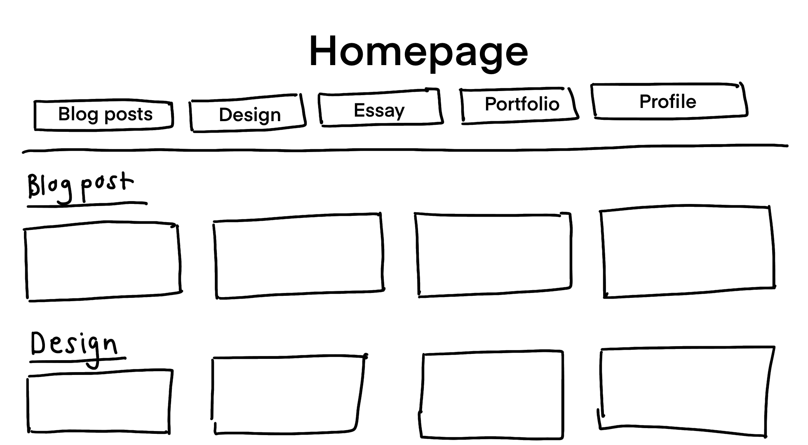
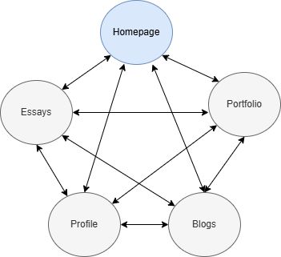

I am familiar with the GitHub interface and know my way around most of the features but it was my first time publishing to Pages. It was a lot easier than I anticipated. Although we've just started, I'm excited to develop this website and see what happens in this course.
Harper - 2010 - 'As We May Think'
After reading this article, I better understand the internet as being a digitalized mind. The structures and framework in which these systems are developed are like an person's mind; while the internet acts like a hive mind intended to link all the intersection that take place. We can observed many similarities between the how our own minds work and how the internet works; blurring the lines between reality and pixels.
There really is more to it than meets the eye, which makes learning about intimidating and overwhelming. The most interesting point was how all these coding languages emerged and how you can signify the same thing even if its in a different language. Learning really is limitless.
It hasn't been around for as long as I thought. The way that these frameworks and theories were realized is actually unimaginable. I'm surprised at how many iterations took place while forming what we know to be the internet today. The fact that the World Wide Web was established just about 30 years ago is baffling to be because of how much it has changed following its inception.
Pass, obviously
To create my first website
To be fluent in different coding languages
Experiment with different styles and aesthetics that create visually compelling websites
Better understand what the internet is
Week 2 — Blog Post
Reflection on readings
The 2003 book "You Say You Want a Revolution?" by Stuart Moulthrop examines how hypertext was intended to alter how we communicate, write, and read. He questions if hypertext has actually brought forth a revolution or if it has only produced a new kind of control by applying Marshall McLuhan's media theory. Hypertext was first envisioned as a democratic, open system that permitted users to freely interact and produce information. But Moulthrop contends that rather than a digital haven we were left with corporately run websites like Google, Facebook, and Amazon. These businesses control what information is displayed, influencing what individuals read and think.
In his discussion on surveillance, Moulthrop makes the prediction that hypertext might be used as a tool for user tracking. Large volumes of data are being gathered by businesses and governments from internet purchases, social media, and search engines. "Do you accept these cookies?”. The internet frequently serves to uphold established power systems rather than to empower individuals. For instance, social media algorithms restrict true freedom of expression by promoting some information while concealing others.
The fact that media revolutions frequently reproduce the past is another important argument. Before it was taken over by large corporations, television appeared to be a democratic medium. Similar circumstances applied to the internet, which began as an open platform in the 1990s but is currently controlled by a small number of strong corporations. The basic idea of hypertext is still being pursued, nevertheless, by certain initiatives like Wikipedia and open-source initiatives.
Moulthrop's essay serves as a reminder that a revolution cannot be sparked by technology alone. The way people utilise and manage digital tools determines real change. He encourages us to consider whether we have already lost control or whether we can still fight for an open internet. His theories are still very applicable as we traverse the online world of today, when knowledge and power are more intertwined than ever.
Folder Structure and URL Scheme

First Wireframe Ideas



Homepage: This will have an overview of all the elements that will be included into the website. This includes a wireframe design that will be able to to display previews of each folder.
Blog Posts: This page will include all the blogposts that we've done in the semester. There will be a scroll menu on the left hand side that can easily direct you to the blog post of your choice. There will also be two buttons at the bottom that will lead you to the previous or next page. This will be included for all pages except the homepage.
Portfolio: My portfolio page will include all the work that displays my skill as an artist. It will also include any and all sketches of storyboards and official campaign storyboards I've done over the years.
Profile: My profile will include my name and surname, interests, education, qualifications and skillsets. This will also include any contact information that would be important for future employers and collaborators, e.g. email or phone number.
Web Inspiration
Reflection on interaction and the WWW
Human communication is built on interaction, which also shapes how we connect, learn, and exchange ideas. The World Wide Web (WWW) has changed interaction in the digital age from a local, in-person encounter to a worldwide, instantaneous information exchange. I define interaction as meaningful participation, teamwork, and communication rather than merely liking articles or clicking links.
Interaction has become more dynamic because to the web, which enables users to contribute to conversations, produce material, and influence online environments. We now have more avenues to express ourselves and change the world thanks to social media, forums, and online gaming groups. But not every interaction is created equal. Some voices are magnified while others are buried due to the rise of algorithms and monetised engagement, which shapes our perspectives in ways we may not always be aware of.
I believe that critical thought and active engagement are necessary for true interaction. It involves more than just taking in knowledge; it also involves asking questions, coming up with ideas, and participating. Initially, the web was an open hypertext system that allowed users to freely link and explore concepts. However, a large portion of our interactions now take place on regulated platforms where businesses control what we can see and how we can participate.
This begs the crucial question: Are we actually interacting, or are we merely responding to the information that is presented to us? Are we influenced by covert systems or do we have agency over our digital environments? We must reconsider what meaningful engagement looks like as the web develops and how we might preserve true human connection in a society that is becoming more and more influenced by technology.
Week 3 — Blog Post
User Alignment
In web design, user alignment refers to how the design of your website aligns with the user's expectations, experience, needs and behaviours when interacting with a website. My user alignment aims to consider elements that are placed in a format that is intuitive to the user.
The ways I intend to do this is to prioritise user-centered design to improve usability and engagement. To do this, establishing a consistent structure that focuses on readability, simplicity and interactivity in order to create a seamless experience that will keep the user engaged.
Content:
- Homepage
- Blogs
- Portfolio
- Profile
- Essays
The user interface aims to convey a simplistic design that is accessible and responsive. Any and all screen readers (desktop, phone, tablet) should be able to engage with the website content, emulating similar if not the same experience across platforms. I aim to utilise other semantic languages such as Javascript and CSS once I have establish a front-end scheme that satisfies the requirements of a working design.
Javascript and CSS as mentioned above work as back-end semantic languages that aid in the visual formatting and layout placement in web design and primarily focus on bridging the gap between the user and the system.
URL Scheme and Semantic Markup
The use of HTML (or other markup languages) that communicates the meaning of content instead of primarily specifying how it is presented is known as semantic markup.
It aids in the comprehension of the content's structure and intent by screen readers, search engines, and other technologies.

Better understanding the folder structure allows for my content to be structured in a way that aligns with how I want my URL Scheme and Sematic Markup to function.
Development progress
The have been updated my website weekly to ensure that I am up to date. I have noticed that regularly updating my website allows me time to familiarise myself with the semantic elements and web design. There are many small considerations that one has to make when design the user interface and user experience.
Many attributes of design may seem intuitive at first, but when applying these principals into a practical example I realised things like navigation and structure or interaction and engagement matter just as much as the aesthetics. I have therefore been focusing on learning the semantic HTML elements to better structure and understand the purpose of my content.
Week 4— Blog Post
IxD Process
- Goal Alignment
- URL Folder Structure
- User Flow
- Design Template
- Style Guide
Goal Alignment
The primary goal of this website is to explore how seamless and simplistic design can create a user-friendly experience through the heavy influence of interactive and responsive elements. The website aims to engage users while exhibiting a simple yet pleasing aesthetic. By engaging with the website, the user will also gain sense of my personality and portfolio work.
My original wireframes did not include a navigation bar. This means that the user will be able to enter each content page, but won't have a way of navigating to other pages. By including the nav bar in my wireframes, I extend the accessibility of my design and allow a proper flow between each of the content pages.
URL Folder Structure

User Flow

The website design needs to adhere to a design structure that allows for a good user experience. Making the navigation seamless and easy between content pages will facilitate this aspect. The user needs to be able to navigate between pages when interacting with the website so this is an important step in the design process.
Design Template
The website will be using CSS and JavaScript to help with the visual design aspects of the website. These visual design elements will help create a pleasing and aesthetic look. By using the interface as a medium of communication that will also communicate to he user how they can manipulate the system through these user interactions
Style Guide
The readability, font, colour palette, background and layout are all elements are considered when thinking about how you want you user to interact with your website. The main focus would would be:
"What do you want you user to see first?", "What are things you want them to experience?", "What kind of feeling does your website give the user?".
The design should promote user engagement and not take it away. Having a page that overwhelms the user would take away from the goal I'm trying to achieve. The style guide then acts to reiterate the importance of the feel and flow of the website. It is like a trailer of what the website is going to look like. It gives an idea of how the elements will be structured on the pages, how it promotes the content on each page while catering to the target audience.
Website 1 Reflection
The initial we design process seemed easy and simple since I use different websites all the time and have noted all the things that I would consider and include in my own website. Now that I have started my own, I realised that although I want to include and consider all of these design ideas, it isn't as intuitive as I expected it to be. I realised how important each process is in web design. Learning html has been fun and through this process, I have garnered new knowledge on web design.
I faced challenges with website navigation which stems back to my: folder structure. I have change the format of my folder structure and have re-evaluated how I want my website to flow. This will fundamentally change the user flow and design elements of my website. My focus now is how I will structure the UI and UX elements to compliment and support the URL Structure and improve the user experience overall. I'm glad I was able to find an efficient way to build this website. It has really made things easier for me.
I also cannot wait to use Java Script and CSS to start adding the visual elements and really bring my website to life. I am a bit anxious about the coding elements but I have found that working week-by-week has made things easier.
I am most proud of the structure of my website. It flows the way I expected it to and has all the elements that I would like to see in a website such as a consistent format, font and layout. Once I added the Navbar, the goals for my user flow that I tried to achieve were met. My website is being iterated every chance I get will continue to improve.